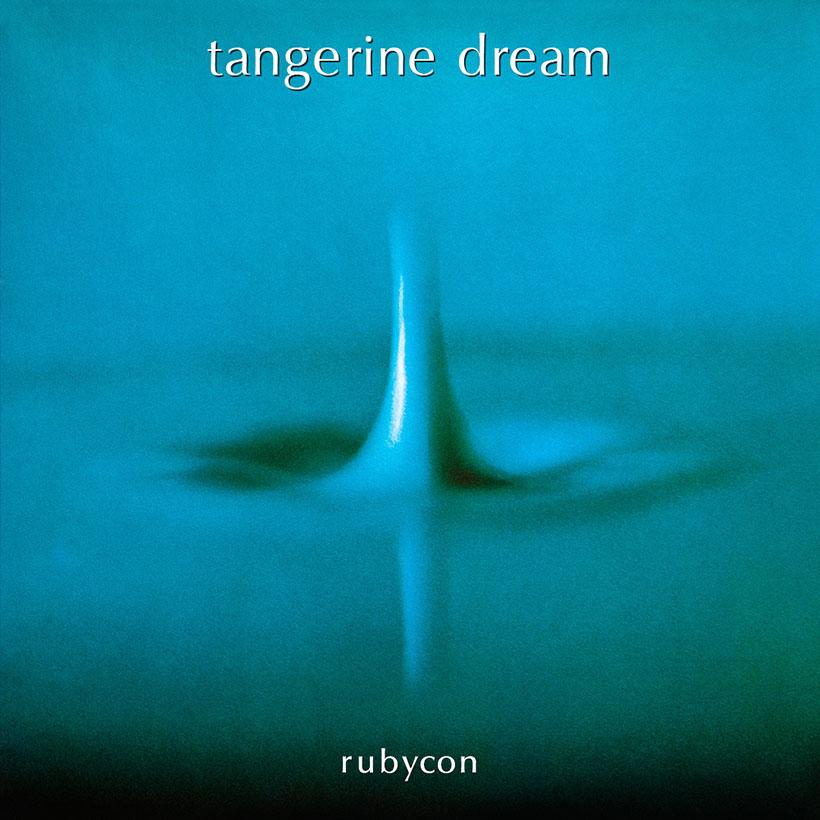

Timbre is particularly important in ambient music because composers use sound colour to create mood and atmosphere. Ambient music often features warm synthesiser pads, soft electronic sounds, and long sustained tones. Effects such as reverb and delay are commonly used to give sounds a sense of depth and space. Different timbres may gradually appear and disappear throughout a piece, helping to create contrast without relying on strong melodies or rhythms.
Example:
An ambient track may combine bright synthesiser sounds with darker pads and heavily processed effects to create a wide range of colours and textures within the music.